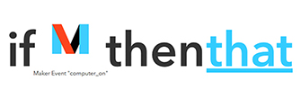

IFTTT Trigger
Use rules in the cloud with IFTTT (“if this then that”).
IFTTT (https://ifttt.com) is a cloud service that allows users to create chains of simple conditional statements, called “recipes”.
Discover recipes here: https://ifttt.com/recipes
All the recipes use channel that are created from the majority of social networks and inbox applications.
In order to generate IFTTT Trigger, we use the Maker channel that allows you to connect your app with the IFTTT service.
Before you start
An IFTTT account
To use the IFTTT Trigger node you have to have an IFTTT account ! To create your account go on the IFTTT Web site https://ifttt.com.
After your inscription done, you have to connect your account with the Maker channel. Now you can create recipes with this channel ! A secret key have been created to link your account with the notifications that will be genarated, you have to remenber this key for later.
Create the recipe with Maker
Click on “My Recipes” link on the web site’s top and “Create a Recipe”. For “THIS” you choose the channel Maker and define an event name.
Finally for “THAT” you can choose only one channel to receive an email or a SMS on your phone (you can choose the channel you want).

Email configuration
Choose the “Email” channel to configure your notification. IFTTT use your account email by default.
SMS configuration

Choose the “SMS” channel to configure your notification. IFTTT demands your phone number and you have to type like that if you have, for example, a french number :
- 0036XXXXXXXXX (36 is the country calling code and the nine X are your phone number without the first 0)
Configuration
We will create a flow that will trigger some informations from the event you have created.
Follow these instructions :
-
Drag and drop 1 go node from the nodes palette to your workspace,
-
Drag and drop 1 IFTTT Trigger node from the palette to your workspace, and link it to the go node,
Once done, you should have this flow :
By double clicking on the IFTTT Trigger Node, you will see the configuration panel.
Then, you have to set some values :
- Event : the event name of your previous recipe,
- Secretkey : your secret key,
- Value1, Value2 & Value3 : three optional values
Click Deploy button.
Usage
By clicking on the go node, you will send the data to the event and IFTTT will redirect the notification in terms of your recipe.
Going further
We will create a flow that will trigger some informations to the event you have created.
Drag and drop and wire one Go node, one Function node and one IFTTT Trigger node to build this flow :
By double clicking on the Function Node, you will see the configuration panel.
Then, you have to set some values :
- msg.event : the event name of your previous recipe,
- msg.secretkey : your secret key,
- msg.value1, msg.value2 & msg.value3 : three optional values
The function might be this :
msg.event = "front_door"; msg.secretkey = "your secret key"; msg.value1 = "Open"; return msg;
Click activate button.